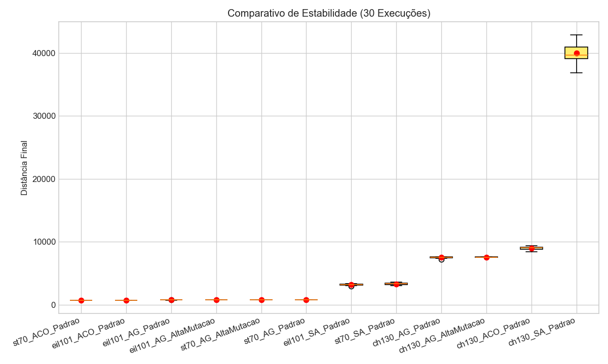

Resultado da Bateria:
O algoritmo com maior número de vitórias foi o ACO_Padrao,
atingindo a melhor distância absoluta de 707.08.
A Colônia de Formigas (ACO) obteve o melhor desempenho geral.
A abordagem construtiva guiada por feromônios convergiu rapidamente para soluções de alta qualidade.
Relatório gerado automaticamente em 19/01/2026 17:50:46

| Instância | Melhor Distância | Vencedor | Detalhes |
|---|---|---|---|
| ST70 | 707.08 | ACO_Padrao | Abrir Relatório |
| EIL101 | 716.33 | ACO_Padrao | Abrir Relatório |
| CH130 | 7244.33 | AG_Padrao | Abrir Relatório |